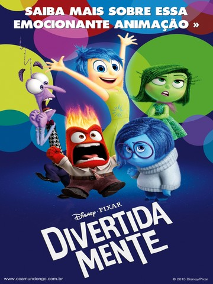

Assistir
IMDB (8.5)
Pixels
2015
Riley é uma garota divertida de 11 anos de idade, que deve enfrentar mudanças importantes em sua vida quando seus pais decidem deixar a sua cidade natal, no estado de Minnesota, para viver em San Francisco. Dentro do cérebro de Riley, convivem várias emoções diferentes, como a Alegria, o Medo, a Raiva, o Nojinho e a Tristeza. A líder deles é Alegria, que se esforça bastante para fazer com que a vida de Riley seja sempre feliz. Entretanto, uma confusão na sala de controle faz com que ela e Tristeza sejam expelidas para fora do local. Agora, elas precisam percorrer as várias ilhas existentes nos pensamentos de Riley para que possam retornar à sala de controle – e, enquanto isto não acontece, a vida da garota muda radicalmente.